ESME: an AI TA students would actually want to use
How we designed an AI helper for a self-paced programming course without letting it hand out answers.
My role I led all of the research, from competitive analysis to think-alouds, and generated the insights that shaped ESME. I also designed the interactions and UI, and built the hi-fi prototype.
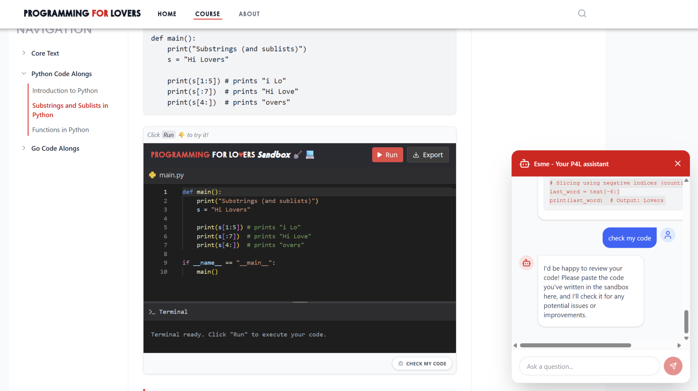
The problem
Programming for Lovers is self-paced. When students get stuck, there's no TA to ask, so they turn to ChatGPT, which gives them the answer. Phillip wanted AI support that helped without removing the struggle that makes learning stick.
Research
I started with a competitive analysis of 7 AI learning tools, then ran contextual inquiry with 5 students.
Key insight from research
Students don't trust chatbots, because chatbots dump answers.
One student was annoyed that she had to keep reminding ChatGPT not to give her the answer. Another avoided chatbots entirely because of hallucinations. A better chatbot wouldn't be enough. ESME had to earn trust by helping students think, not by doing the work for them.
I also watched how students actually learn. All 5 relied on example code and pseudocode to get started.
They also wanted what a TA offers, like deeper questions and real-world applications of the code, not more of the same course content.
So the goal was to fit into how students already learn and work, instead of asking them to learn a new tool.
Early design
We sketched where ESME should live on the course page, then embedded it into mid-fi course pages to try out entry points.
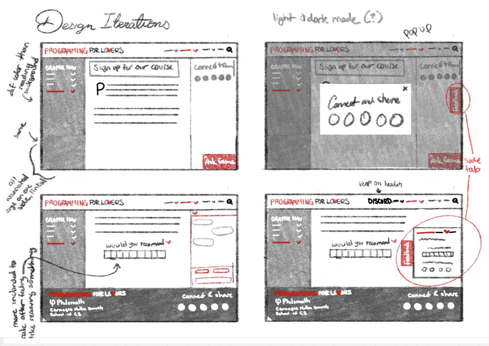
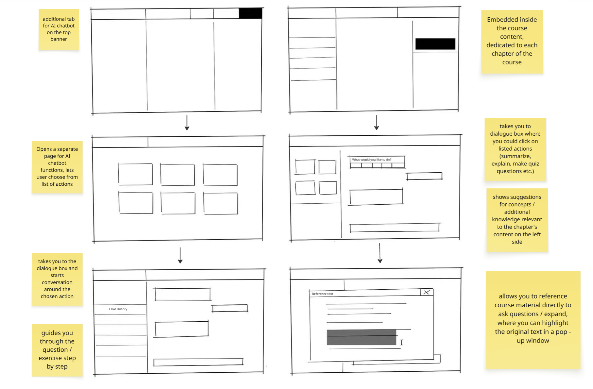
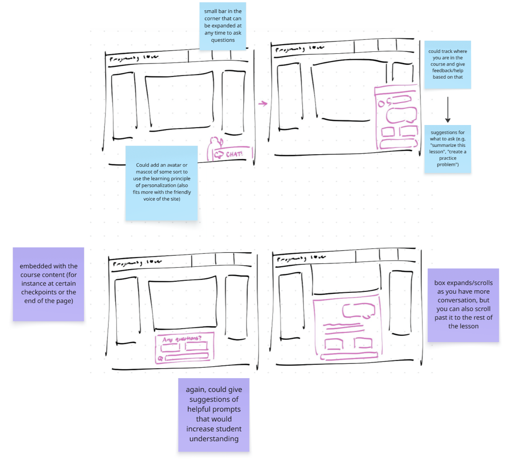
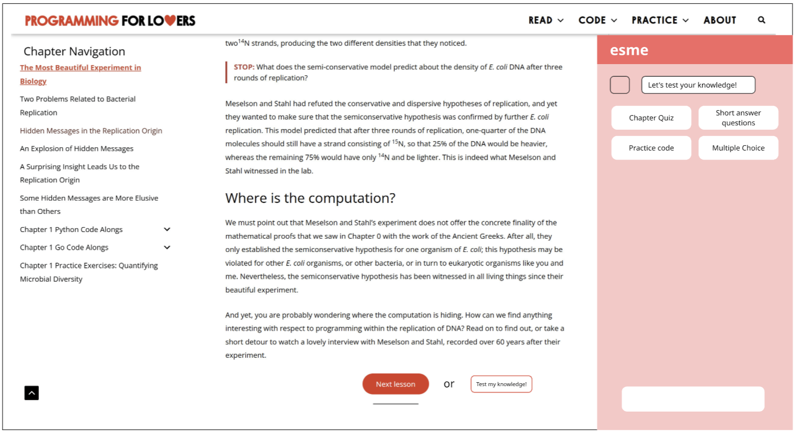
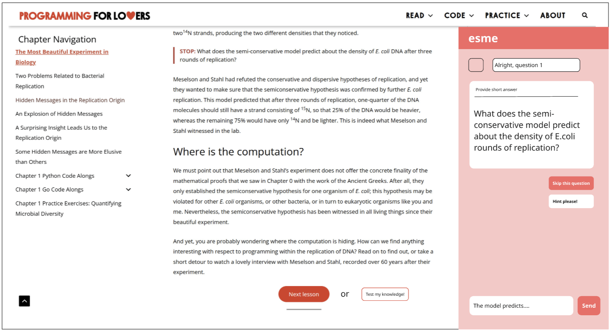
What testing changed
I ran think-alouds with 6 more students. We'd placed ESME in a quiet right sidebar so it wouldn't disrupt reading, but students following their normal routine mostly didn't notice it.
Key insight from testing
The first interaction is the barrier.
Students who tried ESME warmed up quickly. Even skeptical ones acknowledged it was useful. The hard part wasn't convincing students. It was getting them to find ESME in the first place.
We proposed ways to get noticed without being disruptive: a cue when a student uses the sandbox or highlights text, a small intro animation, a first-run tutorial, and shorter responses, since students skipped long ones.
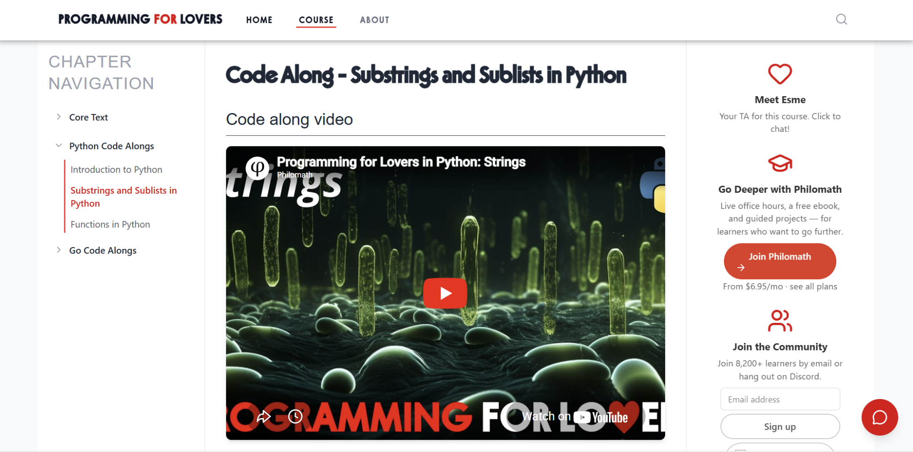
Key insight from testing
Students didn't know what ESME could do.
ESME could write example code, but a student facing an empty chat box wouldn't think to ask. So we built the prompts in as buttons.
Key decisions
A TA, not a chatbot
Because students distrust chatbots, we named and presented ESME as a course TA rather than "AI."
Guidance instead of answers
Wrong answers lead to hints, with "give me a little help," "switch question," and "show correct answer" as separate choices. Students control how much help they get.
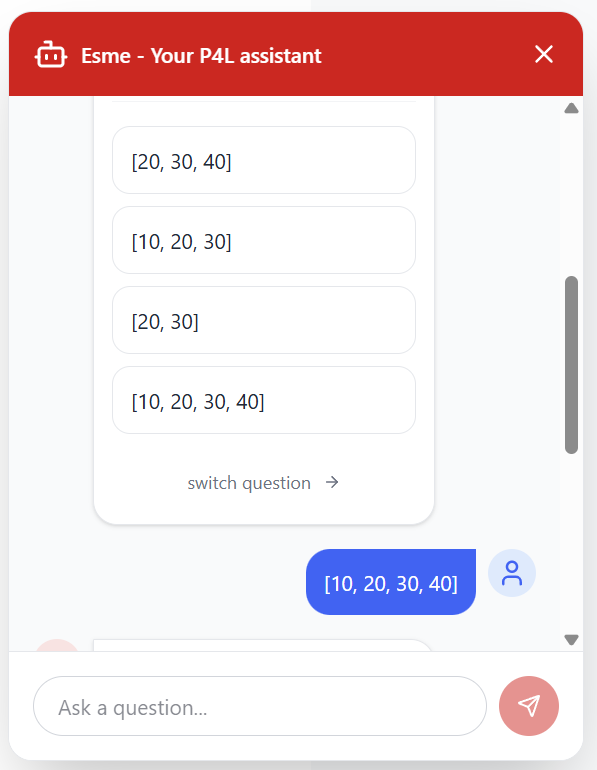
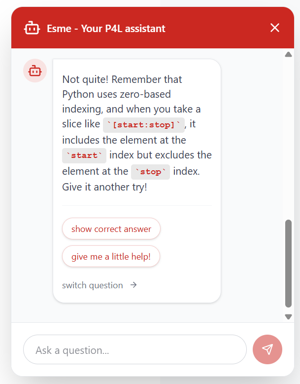
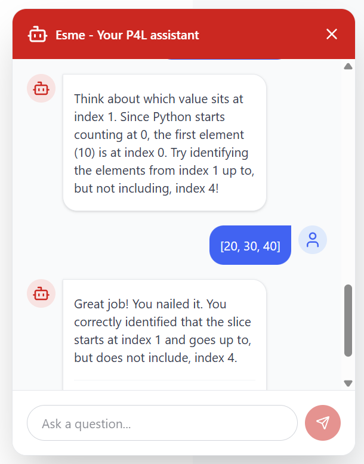
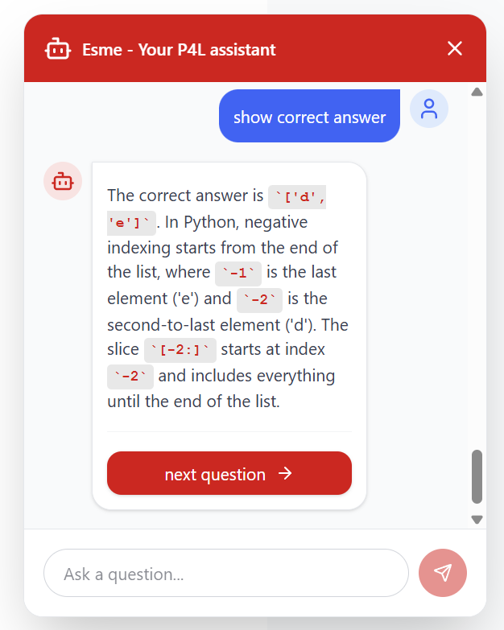
Visible starting points
Since testers didn't know what ESME could do, we showed them. Three preset options ("Explain concept," "Test my knowledge," "Code example") match what students already practiced most, including the example code they relied on. In testing, these built-in buttons were the most-used feature.
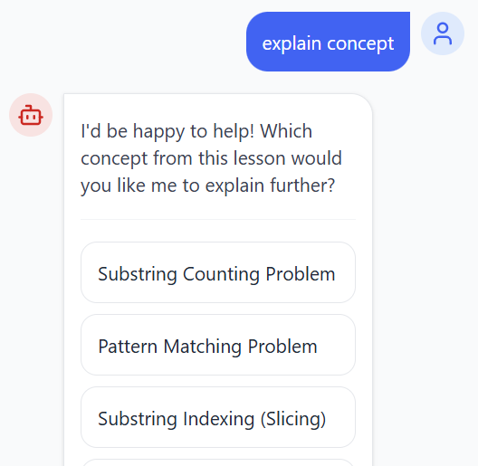
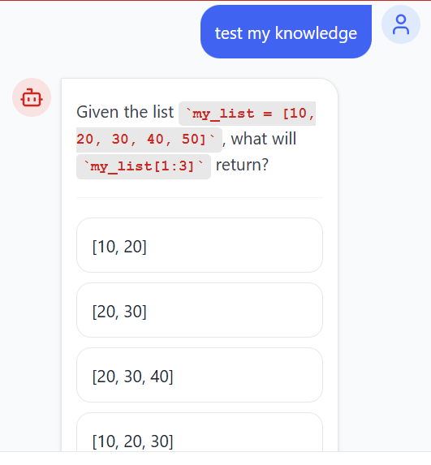
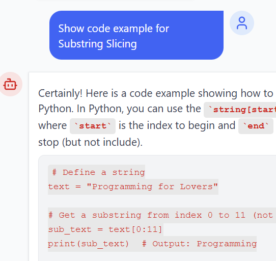
Help where students get stuck
Entry points sit under the coding sandbox ("Check my code"), at the end of chapters, and where new concepts are introduced, not as constant pop-ups.

Outcome
A working version on the course's staging site. It uses retrieval to ground answers in course content, responds in 10 seconds or less, and ends each answer with a follow-up question. We handed it off to the team continuing development over the summer.
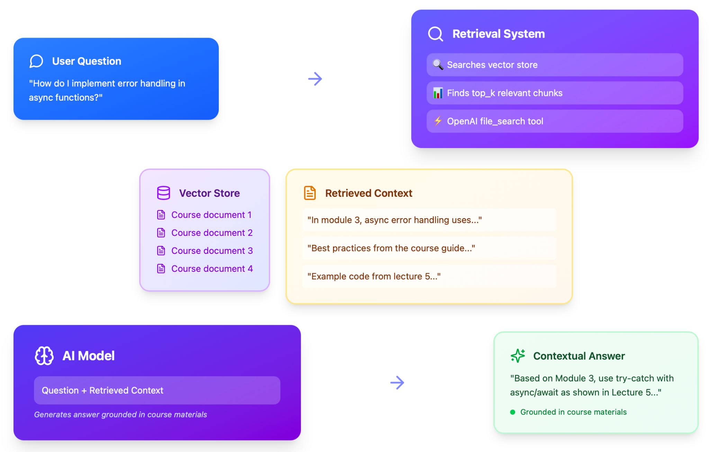
What I'd do next
We tested with 11 students in short sessions, so we don't know yet whether ESME improves learning. Next I'd measure what happens over a full unit: how many students come back to ESME, how much they rely on "show correct answer," and how they do on later exercises.